Rosalinde-Blog
Warum dieser Blog? Ich ernähre mich jetzt seit 1,5 Jahren vegan (flex) und wurde in der Zeit öfters mit
Fragen oder Kritik konfrontiert. Als Person, die nicht immer die perfekte Antwort gleich weiß, habe ich
diese Seite erstellt. Und die Seite zeige ich auch im Rahmen des Erdkunde-Projekts "Wir gegen den
Klimawandel".
Das Essen selber (Rezepte, Ideen und Produktempfehlungen)
Frühstück
- 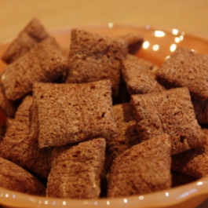
- Hafermilch mit Cornflakes (z.B. sind Nougatkissen und viele weitere Sorten oft vegan; ein Blick auf die
Zutaten lohnt sich) oder Müsli (Kölln hat eine Reihe Müslis, die vegan sind; ein Blick auf die Zutaten
lohnt sich)
- 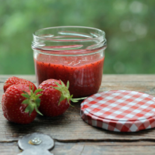
- Marmelade (in vielen Fällen vegan)
- 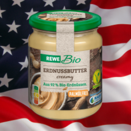
- Erdnussbutter
- 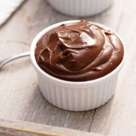
- Schokocreme (Bionella und weiter Öko-ohne-Palmöl-Marken sind vegan, Nutella nicht)
- 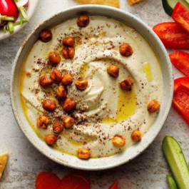
- Hummus (Kichererbsenpaste)
- 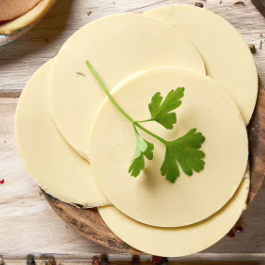
- veganer Käse, genießbarer als oft erwartet (gibt es von etlichen veganen Marken in vielen Sorten
z.B. food for future, Bedda, Simply-V, Vehappy)
- 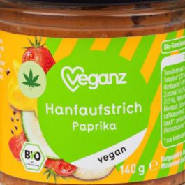
- Gemüse-Aufstriche (von Tartex oder der jeweiligen Biomarke in Sorte Tomate-Basilikum bis
Linse-Curry)
- 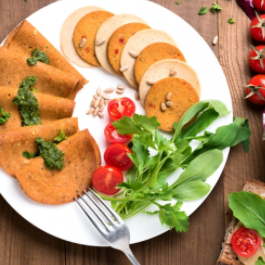
- veganer Wurstaufschnitt (da bin ich kein Experte, mag den Geschmack nicht)
- 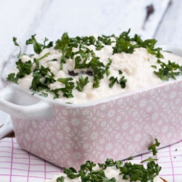
- veganer Frischkäse (von Simply-V, am besten noch ein wenig Gemüse oben drauf)
- 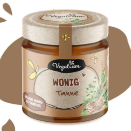
- veganer Honig (Zuckersirup mit Blütenextrakt
- 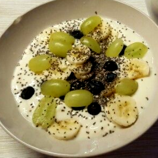
- Alpro-Joghurt (gibt es in etlichen Sorten z.B. Erdbeere, Skyr oder Zitrone) mit Schokodrops (Zartbitter
ist meistens vegan, ich empfehle die Schokoplätchen von Liliput) oder Cornflakes
Mittagessen
- Rezepte von ChatGPT: Einfach "Ich habe noch 200g Weed, mache mir ein
simples, veganes Rezept."
Zwischenmahlzeiten
Abendessen
Auswärts essen
Hier sind logischerweise nur Restaurants in Buchholz/Hamburg aufgelistet. Eine klasse App mit echt großer Menge
an eingetragenen veganen Restaurants ist
HappyCow. Funktiniert
ähnlich wie Google Maps, nur es sind alle möglichen veganen Dienstleistungen und vorallem Restaurants
eingetragen.
- Gasthäuser DEUTSCH: Cordes Restaurant, Schafstall, MoorbahnCafé, ich habe es aber schon oft erlebt, dass
ich einfach
nur fragen
musste nach vegan und dann etwas Veganes bekommen habe.
- Fastfood: VINCENT VEGAN in Hamburg; Dominos hat auch sehr gutes, veganes Essen; Bidges & Sons
Reeperbahn; Burger King hat inzwischen alle Burger auch in veganer Form
- Amerikanisch: Lims Way und Lims; Mamalicious (Hamburg)
- Ausländisch: Zedern Imbiss (Bremen), viele indische Restaurants haben sehr viel veganes Essen, Loving
Hut (Hamburg, Lüneburg), Mein Döner Sprötze (macht Falafel-Döner für Veganer mit Pizzasoße),
Klima und Umwelt
Gesundheit
Neuheiten
Termine (Messen, Veranstaltungen etc.)
Weiteres Lesen und Quellen
No Animals were hurt in this page.